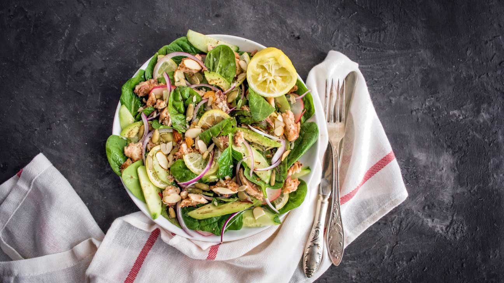
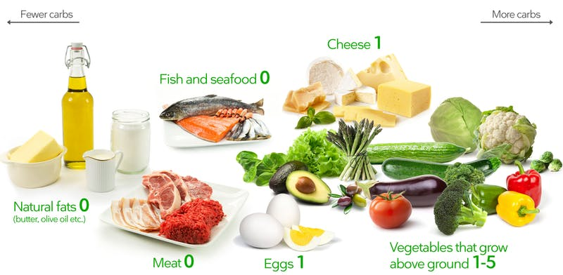
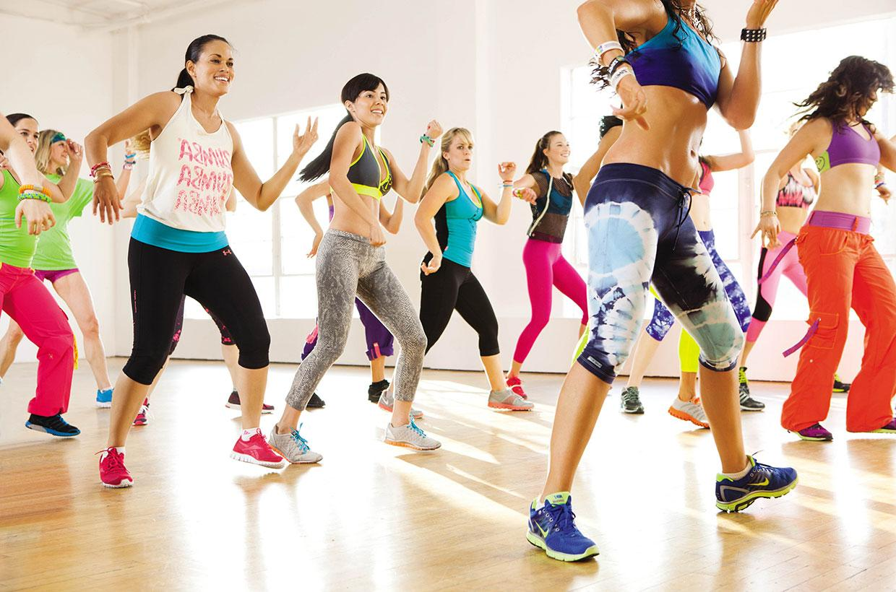
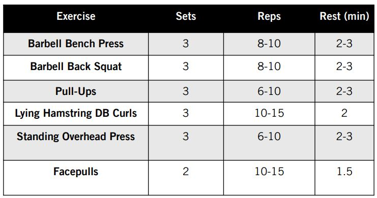
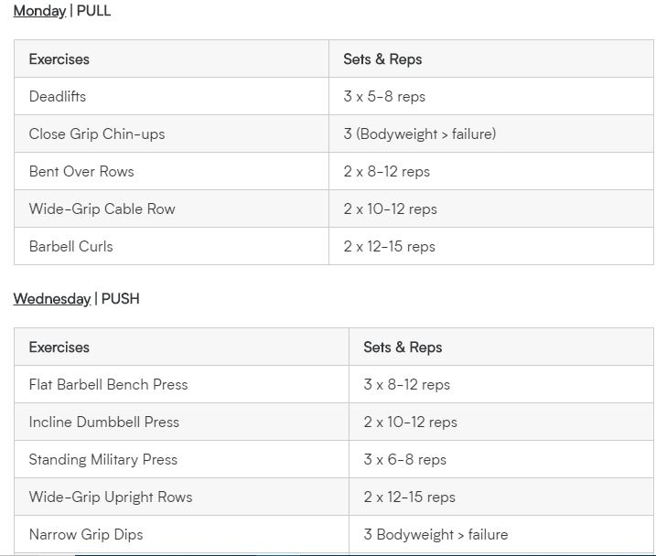
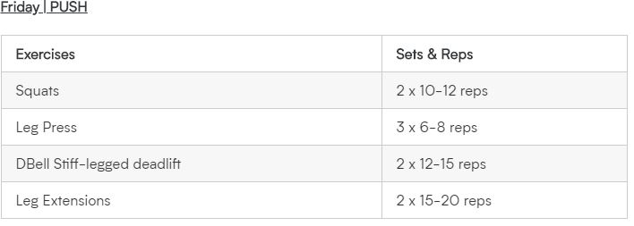
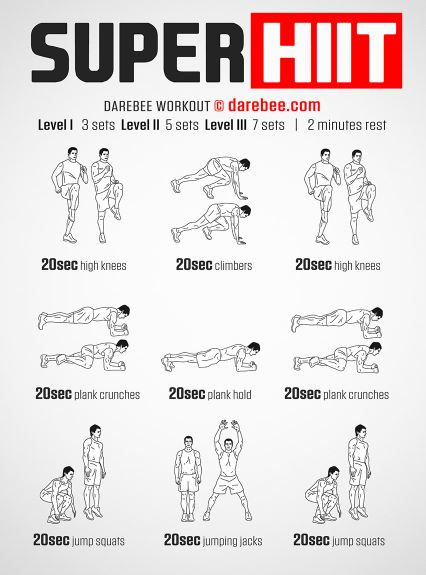
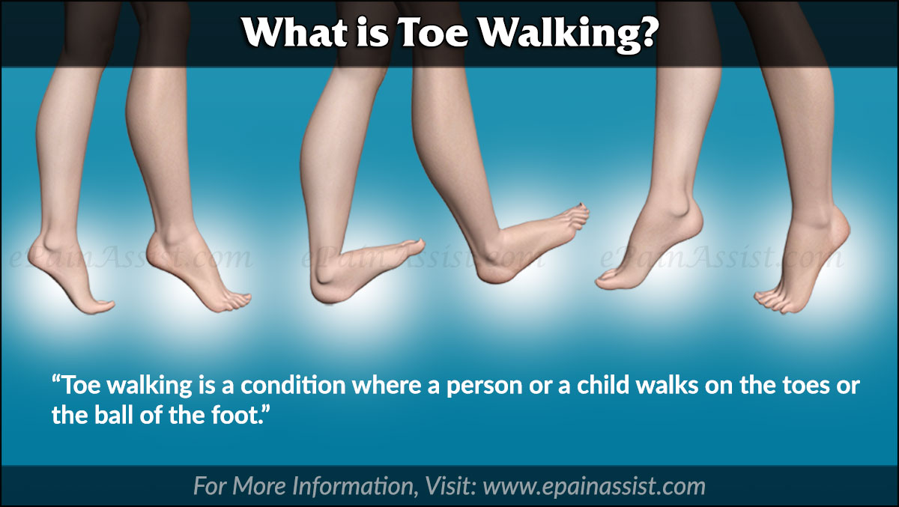
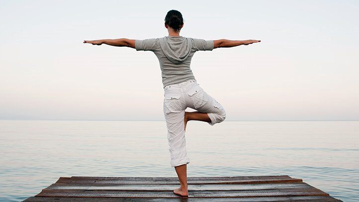
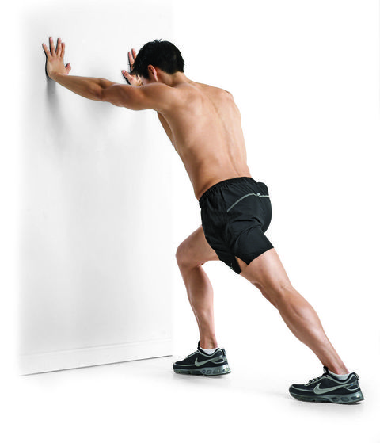

LifeStyle
It's extremely important for people of this age to continue (or to start) to lead a healthy lifestyle, including eating nutritious meals as well as getting plenty of exercise and adequate sleep every day. These positive health habits will help children grow strong, stay healthy, and decrease the likelihood that they will become obese. Childhood obesity rates have increasing dramatically in recent years. According to the Centers for Disease Control, in 2004, 18.8% of school-aged children were obese (!), versus 4% of children 30 years before in 1974. Children's skyrocketing rate of obesity is worrisome because it greatly increases children's risk for remaining obese in adulthood, which in turn raises their risk for heart disease, stroke, cancer, diabetes, and premature death as adults. Obese children may also develop associated health problems during the middle childhood stage, such as high blood pressure, high cholesterol levels, and respiratory problems. Obesity can also set the stage for problems with self esteem, depression, anxiety and social ostracism, and/or being victimized by bullies.

Diet Routine
A balanced diet is important because your organs and tissues need proper nutrition to work effectively. Without good nutrition, your body is more prone to disease, infection, fatigue, and poor performance. Children with a poor diet run the risk of growth and developmental problems and poor academic performance, and bad eating habits can persist for the rest of their lives. Learn more about healthy meal plans for kids. Rising levels of obesity and diabetes in America are prime examples of the effects of a poor diet and a lack of exercise. The Center for Science in the Public Interest reports that 4 of the top 10 leading causes of death in the United States are directly influenced by diet. These are: heart disease cancer stroke diabetes
Atkin Diet Plan
The Atkins Diet is a popular low-carbohydrate eating plan developed in the 1960s by cardiologist Robert C. Atkins. The Atkins Diet restricts carbs (carbohydrates) while emphasizing protein and fats. The purpose of the Atkins Diet is to change your eating habits to help you lose weight and keep it off. The Atkins Diet also says it's a healthy lifelong approach to eating, whether you want to lose weight, boost your energy or help improve certain health problems, such as high blood pressure or metabolic syndrome.
The main dietary focus of the Atkins Diet is eating the right balance of carbohydrates, protein and fats for optimal weight loss and health. According to the Atkins Diet, obesity and related health problems, such as type 2 diabetes and heart disease, are the fault of the typical low-fat, high-carbohydrate American diet. The Atkins Diet says that you don't need to avoid fatty cuts of meat or trim off excess fat. Rather, controlling carbs is what's important.
Click For More DetailsZone Diet Plan
The Zone Diet instructs its followers to stick to eating a specific ratio of 40% carbs, 30% protein and 30% fat. As part of the diet, carbs should have a low glycemic index, which means they provide a slow release of sugar into the blood to keep you fuller for longer. Protein should be lean and fat should be mostly monounsaturated. The Zone Diet was developed more than 30 years ago by Dr. Barry Sears, an American biochemist. His best-selling book The Zone was published in 1995. Dr. Sears developed this diet after losing family members to early deaths from heart attacks, and felt that he was at risk unless he found a way to fight it. The Zone Diet claims to reduce the inflammation in your body. Dr. Sears proposed inflammation was the reason people gain weight, become sick and age faster. Proponents of the diet claim that once you reduce inflammation, you will lose fat at the fastest rate possible, slow down aging, reduce your risk of chronic disease and improve your performance.

The hand-eye method is the easiest way to start the Zone Diet. As the name suggests, your hand and eye are the only tools you need to get started, although wearing a watch is also recommended to keep an eye on when to eat. In this method, your hand takes on several uses. You use it to determine your portion sizes. Your five fingers remind you to eat five times a day and never go without food for five hours. Meanwhile, you use your eye to estimate portions on your plate. To design a Zone-friendly plate, you need to first divide your plate into thirds.
Click For More DetailsKetogenic Diet Plan
The keto diet, as a rule, is very low in carbs, high in fat and moderate in protein. When following a ketogenic diet, carbs are typically reduced to under 50 grams per day, though stricter and looser versions of the diet exist. Fats should replace the majority of cut carbs and deliver approximately 75% of your total calorie intake. Proteins should account for around 20% of energy needs, while carbs are usually restricted to 5%. This carb reduction forces your body to rely on fats for its main energy source instead of glucose — a process known as ketosis. While in ketosis, your body uses ketones — molecules produced in the liver from fats when glucose is limited — as an alternate fuel source.
Switching over to a ketogenic diet can seem overwhelming, but it doesn’t have to be difficult. Your focus should be on reducing carbs while increasing the fat and protein content of meals and snacks. In order to reach and remain in a state of ketosis, carbs must be restricted. While certain people might only achieve ketosis by eating less than 20 grams of carbs per day, others may be successful with a much higher carb intake. Generally, the lower your carbohydrate intake, the easier it is to reach and stay in ketosis. This is why sticking to keto-friendly foods and avoiding items rich in carbs is the best way to successfully lose weight on a ketogenic diet.
Click For More DetailsWeight Watcher Diet Plan
Weight Watchers was founded by Jean Nidetch in 1963 out of her Queens, New York home. From its humble beginnings as a weekly weight-loss group for her friends, Weight Watchers quickly grew into one of the most sought-after diet plans in the world. Initially, Weight Watchers used an exchange system where foods were counted according to servings, similar to the diabetes exchange system. In the 90s, it introduced a points-based system that assigned values to foods and drinks based on their fiber, fat and calorie contents. Weight Watchers has overhauled the points-based system several times over the years, most recently launching the SmartPoints system in 2015.
SmartPoints assigns different point values to foods based on factors such as their calorie, fat, protein and sugar contents. When beginning the program, each dieter is given a set amount of daily points based on personal data like their height, age, gender and weight-loss goals. Although no foods are off limits, dieters must stay below their set daily points to reach their desired weight.
Click For More Details
Workout Routine
physical activity or exercise can improve your health and reduce the risk of developing several diseases like type 2 diabetes, cancer and cardiovascular disease. Physical activity and exercise can have immediate and long-term health benefits. Most importantly, regular activity can improve your quality of life. A minimum of 30 minutes a day can allow you to enjoy these benefits. A number of studies have found that exercise helps depression. There are many views as to how exercise helps people with depression: Exercise may block negative thoughts or distract you from daily worries. Exercising with others provides an opportunity for increased social contact. Increased fitness may lift your mood and improve your sleep patterns. Exercise may also change levels of chemicals in your brain, such as serotonin, endorphins and stress hormones.
Endurance
Endurance sports create a stronger, healthier body. Muscles, cardiovascular system, bones, joints, and lungs all learn to adapt to the new task of sustaining a strong pace for hours. Endurance athletes also enjoy faster metabolisms due to more lean muscle mass, so we can indulge our sweet tooth more without the guilt. Sustained exercise also reduces the risk of most debilitating diseases.
Brisk walking or jogging
Jogging is a form of sustained running or trotting at a steady and slow pace. It is much slower than running but is faster than walking. The main purpose of jogging is to maintain your tempo without causing much strain to the body. This is less taxing on the body, consumes much lesser energy and thereby, helps to sustain for a longer time. Jogging or running is a popular form of physical activity. About one in five Australians try running (or jogging) at some stage in their life. Running is an appealing exercise because it doesn't cost a lot to take part and you can run at any time that suits you. A half hour jog easily burns around 300 calories. Jogging boosts the metabolism and is more effective than mere walking. A healthy diet along with regular jogging will melt those extra inches that you have always wanted to shed. Jogging not only burns fat but also helps you maintain your weight. The advantage of jogging is that it maintains bone health. When you begin jogging, the bones experience some amount of stress and load. Jogging prepares the bones to bear this additional stress which it starts to endure on a regular basis. Jogging strengthens the bones and prevents bone trauma and injuries. It improves bone thickness and wards off problems like osteoporosis, osteoarthritis and rheumatoid arthritis. It also makes the bones of the hip and the spine stronger.
Jogging is a complete workout and also serves to prepare the body for an intense workout and other physical activities. You would be surprised to know that jogging does much more for your body than just helping with weight loss. It helps to build endurance and stamina in the body without being too harsh. It strengthens the muscles and bones and also keeps the heart and mind healthy.
Yard Working
Doing yard work is a great cardiovascular exercise. Your activity while raking leaves, sweeping the patio, mowing the lawn, and pulling weeds is a great way to increase oxygen flow to the heart, aids in arterial flow, reduces blood pressure and stress, and gets your heart rate going. Just be sure to keep water on hand and stay hydrated during your back yard workout!
Doing yardwork may not be on your list of exercises to burn calories, but perhaps it should be. Depending on how much you weigh and the type of work you do, you can burn 240 to 448 calories per hour. In general, the more you weigh and the more vigorous the activity, the more calories you burn. Shorter fall days means less time to get outside and enjoy sunlight and nature, which can lead to more feelings of restlessness and unhappiness. Setting aside time right after work or on the weekends to get out in the yard and do a little work gives you the opportunity to get some much-needed fresh air and natural Vitamin D through sunlight. Remember your sunscreen whenever you’re out in the sun. Sometimes a little work deserves a big reward! One of the best treats after tending to your back yard is enjoying it from the comfort of your hot tub. After all, you’ve taken the time to clear the leaves, mow, and tidy the patio… why not take the time to enjoy it all? The cool autumn weather makes a soak in the hot tub seem even more enticing, and as the sun sets, you can enjoy the fruits of all your labor illuminated by the lights of your spa.
Dancing
These days, people love to watch other people dance. Competitive are dominating the world of reality television. What you may not realize, however, is that if you get off the couch and dance yourself, it’s a great way to keep your body and mind healthy. Studies show that dancing can help you lose weight, stay flexible, reduce stress, make friends, and more. What are you waiting for? Start reaping the many health benefits of dance today.
Dancing is a great way to get exercise and stay in shape. It is more fun than simply going to an exercise class. It provides a more sociable way to get active, especially if you are doing couples dancing. Many dance schools and community organizations offer dancing lessons, A class could be a fun way to improve your overall health. Here are some of the many benefits associated with dancing.
Dancing can help to improve your body’s overall strength because some of the moves are against your own body weight. Depending on the style of dancing you are doing, you may have to jump or twist in ways that require major strength in the legs. Ballroom dancing requires hopping, jumping and sometimes running. If a male dancer lifts his partner, he will develop strength in his legs and arms.Strength
Strength training can help you get stronger and look and feel better with just a few short sessions each week. Strength training can be performed with free weights such as barbells and dumbbells, by using weight machines, or with no equipment at all. Men and women of all ages can benefit from strength training, but get a doctor’s OK before beginning, especially if you haven’t exercised in a while. Two or three 20- or 30-minute strength training sessions every week can result in significant health benefits:
FullBody
The first benefit to using full body workout programs is that there is a much lower time requirement to perform them. If you're someone who has something on the go every night of the week, it can be hard to fit in a four-day-a-week gym program. Since full body workouts can be performed over the course of just two or three days a week, this allows more time for other obligations in your life. Depending on how you structure the full body workout program you may find they do take slightly longer in the gym to complete, but when you consider the overall weekly time commitment they require, you'll still end up much further ahead than with other programs such as the upper/lower body split.
The second benefit of full body workouts is the increased muscular recovery rates. One main reason why some people do not get progress on their workout program is simply because they aren't recovering from session to session. Some people cannot handle back-to-back workouts even though they aren't working the same muscle part, so for those individuals, full body workouts are perfect. You will get at least one day off between each full body workout, so they will give your muscles maximum recovery time. Third, since full body workouts only call for you to be in the gym two to three times a week as already mentioned, this also frees more time for other activities. If you're currently also doing cardio training either for health purposes or because you want to run a 5 or 10 km, using a full body approach will give you four or five days of the week in which you can complete those activities. Note that you will still have to be mindful of your recovery rates because exercise is still exercise and is stressful on the body, but at least you won't be forced into doing double-day sessions as you would if you were on a higher frequency lifting schedule.
Push/Pull/Leg
The push/pull/legs split is a very simple training method in which you split your body into three parts. And each part is then trained on its own separate day. In the “push” workout you train all the upper body pushing muscles, i.e. the chest, shoulders and triceps. In the “pull” workout you train all the upper body pulling muscles, i.e. the back and biceps. And in the “legs” workout you train the entire lower body, i.e. the quads, hamstrings, calves and abdominals. These three workouts are then alternated over however many weekly training sessions you choose to do.
he push/pull/legs split is probably the most efficient workout split there is because all related muscle groups are trained together in the same workout. This means that you get the maximum overlap of movements within the same workout, and the muscle groups being trained get an overall benefit from this overlap. For example when you train chest with say bench press, you are also hitting your anterior deltoids and triceps hard. And when you train shoulders you are again involving your triceps. So it makes sense to work these all together in the same workout for maximum synergy and effectiveness. Similarly when you train your back your biceps are h
 error ut culpa, quis delectus quibusdam voluptate veritatis porro expedita, repudiandae facere vel dicta eius voluptatibus quas eos distinctio repellat.Hight Intensity Interval Tranning
“HIIT burns more calories during and after a workout than continuous aerobic training,” says exercise physiologist and athletic trainer Scott Weiss, C.S.C.S. “The bursts of increased intensity simply increase the caloric expenditure; thus, more total calories are burned, aiding in better body composition.” Even more: You burn more calories for about two hours after exercise, adding to the greater caloric burn, he explains. Exercise post-oxygen consumption is the body’s natural ability to return to homeostasis after exercise. “With HIIT, the total calories burned is greater in EPOC than with continuous exercise,” he says.
Next time you’re slogging on a run, pick it up—just for 60 seconds. Just one minute of high-intensity work Opens a New Window. during an otherwise not-so-hard workout can boost your endurance Opens a New Window. and your overall health (according to measures like improved blood pressure and higher counts of mitochondria, which help fuel your body and brain), according to a study Opens a New Window. in PLoS ONE. That improved endurance Opens a New Window. will carry over to your more moderate-intensity runs Opens a New Window. , rides Opens a New Window. , and other workouts Opens a New Window. .
Balance
Balance training involves doing exercises that strengthen the muscles that help keep you upright, including your legs and core. These kinds of exercises can improve stability and help prevent falls.
Tai Chi
Tai chi is a non-competitive martial art known for its self-defense techniques and health benefits. As a form of exercise, it combines gentle physical exercise and stretching with mindfulness. Research has produced mixed results but appears to show that tai chi can improve balance control, fitness, and flexibility, and might cut the risk of falls in older people. Tai chi also appears to reduce pain and the symptoms of depression in some cases.
Tai chi showed some potential benefits for helping prevent trips and falls in older adults across a range of studies. A 2012 review looked at 159 randomized controlled trials of various types of intervention that were intended to prevent falls in older people. The studies involved more than 79,193 people, and the authors concluded that tai chi could reduce the risk of falling.
Toe To Heal
Having good balance is important for many everyday activities, such as going up and down stairs. Position the heel of one foot just in front of the toes of the other foot. Your heel and toes should touch or almost touch. Choose a spot ahead of you and focus on it to keep you steady as you walk. Take a step. Put your heel just in front of the toe of your other foot. Repeat for 20 steps.
his balance exercise will improve your coordination and strengthen your leg muscles to prevent falls. It can be done almost anywhere, and is an excellent addition to any fitness routine.
One Foot Standing
Many injuries and medical conditions can affect your balance and leave you feeling unsteady on your feet. An ankle sprain, for example, can leave you with balance deficits due to tears in the muscle fibers that carry balance input to the brain. People who suffer from a stroke also often have severe balance problems that make walking difficult. We also lose stability as a result of the normal aging process. Benefits
The ability to stand on one leg is important. When walking, you spend about 40% of your time with one foot on the ground as the opposite leg is moving through the air. The single leg stance is a simple, but very effective exercise for improving balance. Improving your balance can help improve sports performance, and it may help you prevent falls that can cause serious injury.
Flexibility
Stretching your body to become more supple and flexible offers many physical benefits. Such training allows for easier and deeper movements while building strength and stability. Stretching your muscles and joints also leads to greater range of motion, improved balance, and increased flexibility.
Yoga
Aside from the physical benefits, one of the best benefits of yoga is how it helps a person manage stress, which is known to have devastating effects on the body and mind. “Stress can reveal itself in many ways, including back or neck pain, sleeping problems, headaches, drug abuse, and an inability to concentrate,” says Dr. Nevins. “Yoga can be very effective in developing coping skills and reaching a more positive outlook on life.” Yoga’s incorporation of meditation and breathing can help improve a person’s mental well-being. “Regular yoga practice creates mental clarity and calmness; increases body awareness; relieves chronic stress patterns; relaxes the mind; centers attention; and sharpens concentration,” says Dr. Nevins. Body- and self-awareness are particularly beneficial, she adds, “because they can help with early detection of physical problems and allow for early preventive action.”
Improved flexibility is one of the first and most obvious benefits of yoga. During your first class, you probably won't be able to touch your toes, never mind do a backbend. But if you stick with it, you'll notice a gradual loosening, and eventually, seemingly impossible poses will become possible. You'll also probably notice that aches and pains start to disappear. That's no coincidence. Tight hips can strain the knee joint due to improper alignment of the thigh and shinbones. Tight hamstrings can lead to a flattening of the lumbar spine, which can cause back pain. And inflexibility in muscles and connective tissue, such as fascia and ligaments, can cause poor posture.
Calf Stretching
The calf is comprised of two muscles the gastrocnemius and soleus which fuse at the Achilles tendon and when they contract, they flex the foot to allow you to plant on the balls of your feet. As you land when you walk or run or squat down to sit or perform exercises the calf muscles must stretch to allow your foot to flatten and your shin to come forward. If your calf muscles are excessively tight you will constantly walk and stand on the balls of your feet this impairs your ability to move properly, to squat down and to walk normally. Excessively tight calf muscles are prone to tearing, increase your risk of Achilles tendon tears, and are weak. Holding stretches for 30 seconds that stretch the calf muscles several days a week will improve range of motion, decrease risk of tearing and help the calf muscles produce proper levels of force.
increasing the amount of oxygenated blood reaching your foot and ankle can help alleviate minor joint pain and aid in quicker recovery time between workouts or post injury. Promoting circulation also decreases swelling and reduces occurrence of blood clots. For those who are very active, calf cramping (especially at night) can become all too common. When the calves are excessively tight from exercise, they can develop a tendency to lock up. Stretching will help increase blood flow and decrease those dreaded cramps. Proper hydration may be equally important.